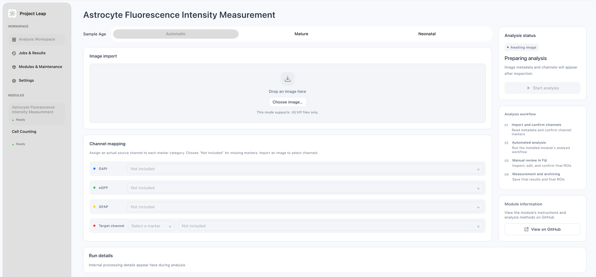

A platform for astrocyte fluorescence image analysis
Project Leap analyzes astrocytes in multichannel immunohistochemistry (IHC) fluorescence images. It combines advanced open-source models with original designs to delineate detailed astrocyte regions of interest (ROIs) against complex image backgrounds. This unique ROI delineation method provides a foundation for a modular design that gives developers the flexibility to add a wide range of analysis features. The software currently has two modules, one for fluorescence intensity measurement and one for spatial cell localization and counting. The fluorescence module integrates with Fiji (ImageJ) for automated measurements. More features and interfaces for integration with other software will be added in the future.
Apple Silicon · macOS 27 or later
Project Leap


Choose modules for your research
Astrocyte Fluorescence Intensity Measurement
Building on Project Leap's unique approach to ROI delineation, this module integrates a customized Fiji (ImageJ) workflow to automatically or semi-automatically measure multiple fluorescence intensity metrics from the target channel within whole-cell, soma, and process regions.
Cell Counting
This module identifies cells using DAPI and a user-defined auxiliary fluorescence channel. It also locates cells in the 3D volume of an image stack, resolving counting problems caused by cells that overlap and are difficult to distinguish in conventional 2D images.
How to use Project Leap
The Project Leap website currently provides downloads and operating instructions for the main application. Analysis modules need to be downloaded and installed separately within the application. Analyses can run fully automatically or semi-automatically with manual review; detailed instructions for each module are available in its GitHub repository. All scientific computations run locally, though analysis speed may vary with image size and hardware performance.